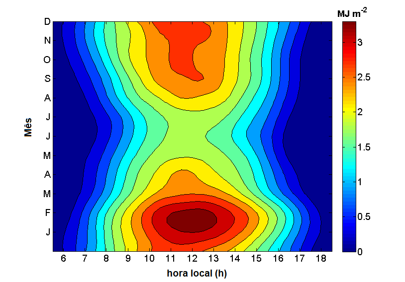
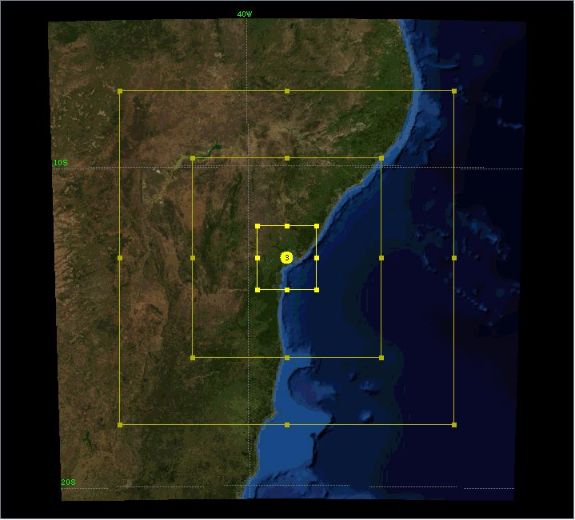
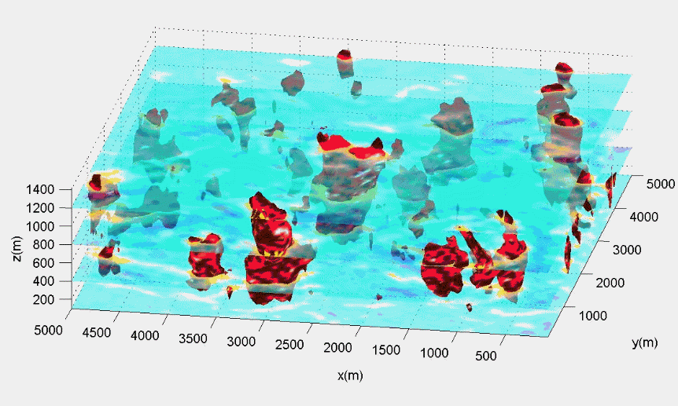

Medidas diretas das componentes do balanço de radiação e das variáveis meteorológicas padrão sobre uma superfície urbana de Salvador.

Previsão do tempo com alta resolução espaço-temporal sobre o estado da Bahia, região metropolitana de Salvador e município de Salvador.

Simulação direta dos turbilhões em um amplo intervalo de escalas temporais e espaciais da Camada Limite Atmosférica utilizando o modelo LES (Large Eddy Simulation).